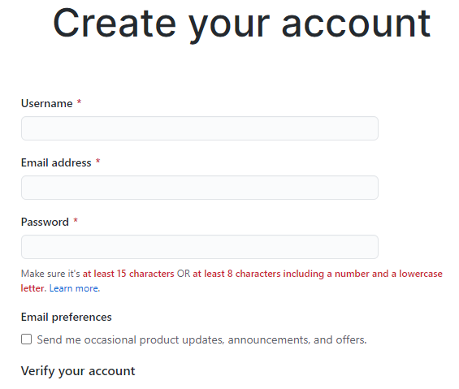
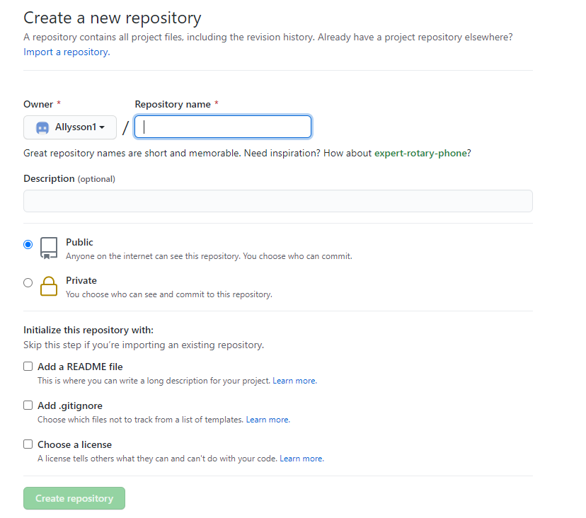
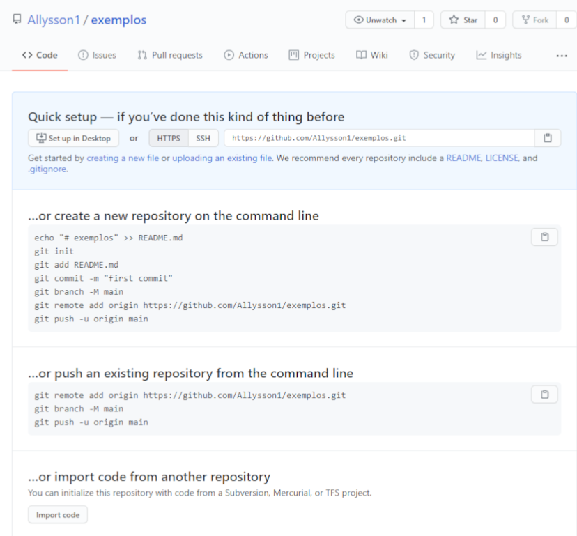
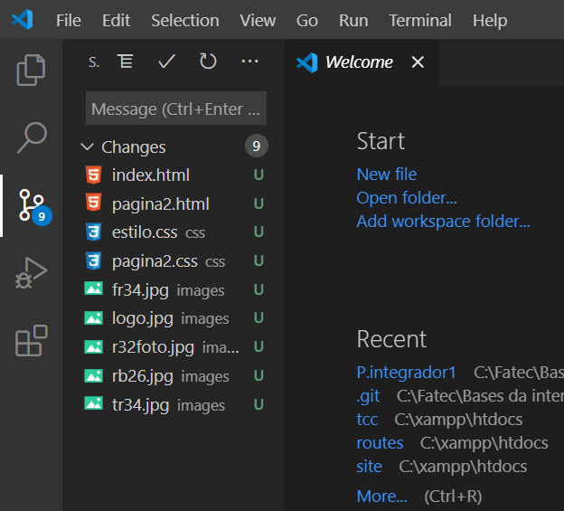
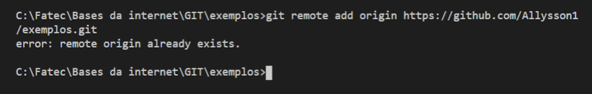
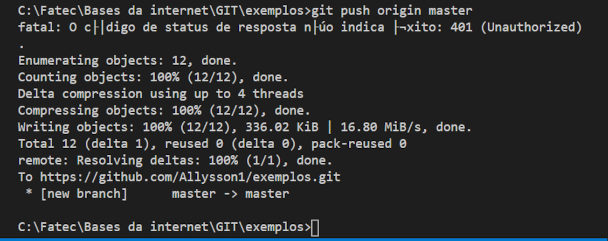
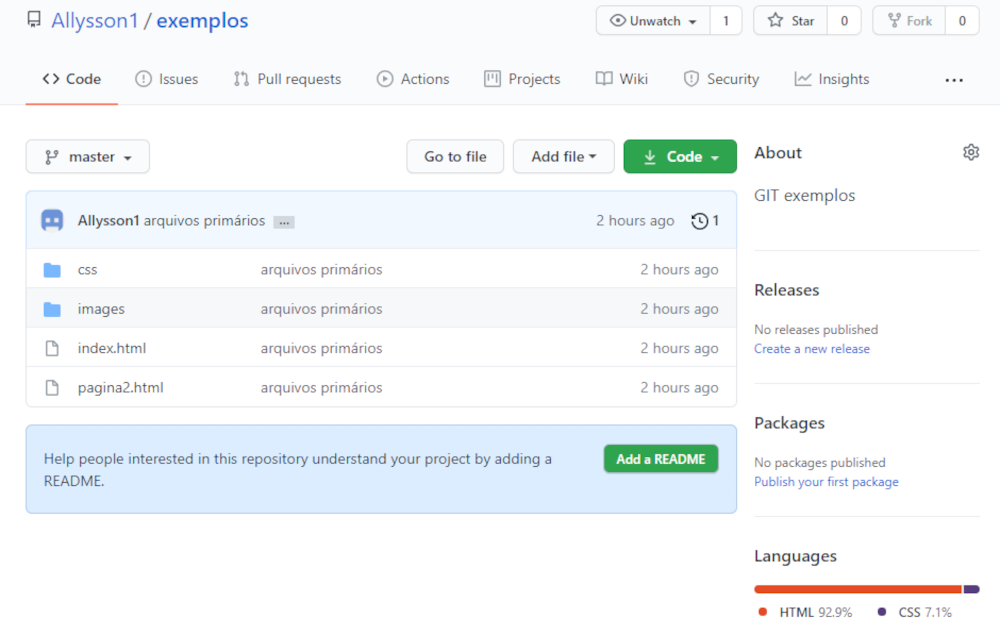
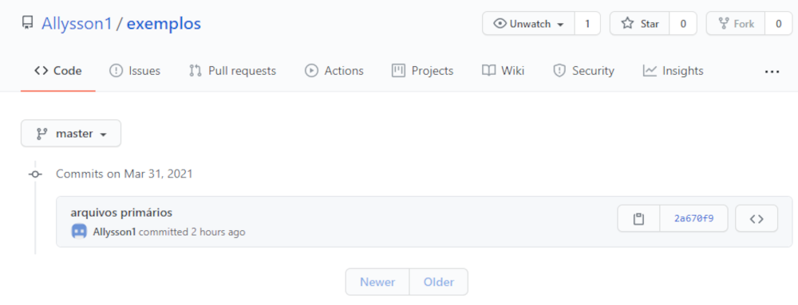

Tutorial De Uso
1. Link para criar conta no github, para ter acesso aos repositórios, a tela que sera aberta ao clicar no link é a imgem a seguir:
Link para criação de conta no GitHub.

Após criar sua conta, crie um repositório no github.

Você em seguida virá para essa tela. Será gerado um link de seu repositório aqui.

2. Após isso, navegue pelo Cmd usando cd ../ para ir fazendo o caminho até a pasta que deseja criar o repositório, como no exemplo a seguir:

3. Agora vamos para o editor de texto escolhido, nesse caso iremos ver o Visual Studio Code, mas se você usa outro, em teoria os comandos não mudam.
Abra a pasta (Open folder) em que você criou o repositório:

A maior vantagem do visual code é que aparece em sua barra de navegação uma pasta que mostra todas as mudanças do repositório em tempo real, conforme o ícone selecionado ao lado esquerdo da imagem abaixo. O ícone verde U, significa Untracked, ou seja, não está salvo no github. O processo para salvar o arquivo no GitHub é o que eu vou mostrar a seguir:

Execute o comando: git remote add origin https:// “seu link gerado no github”
No meu caso deu erro pois eu já tenho os sistemas ligados. (error: remote origin already exists.) Entendeu agora o por que de criar diretórios tanto no GitHub quanto pelo CMD no computador? Continuando..
Em seguida com tudo o que desejava realizar pronto, adicione commits a todos os arquivos (método explicado no decorrer deste documento), pois se não fizer isso não conseguirá subir os arquivos no github
Após isso, utilize o comando “git push origin master” para enviar todos os seus arquivos para o diretório remoto do GitHub.

Quando você executar este comando, irá aparecer uma mensagem do GitHub solicitando seu user name cadastrado, insira seu user name e logo após aparecera uma informação semelhante ao da imagem acima.

Quando acessar sua conta no GitHub, você verá algo semelhante a isso. Clicando no item parecido com um relógio na imagem, você irá para a tela de versões como relatado abaixo:

O número Hexadécimal (numeros e letras) é a versão dos diretórios, criada com base em SHA-1, sistema feito para dar uma quantidade de 40 caracteres para identificação única para o arquivo. Também é responsável pela criptografia do arquivo com sistema Hexadecimal.
Pronto, com esses comandos básicos que aprendeu até aqui, você consegue utilizar muitas utilidades do commit sem dificuldades
ATENÇÃO: Todas as imagens são de autoria própria e meramente ilustrativas, se o seu não estiver parecido, não significa que esteja errado.